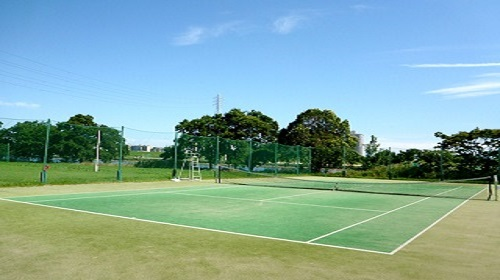
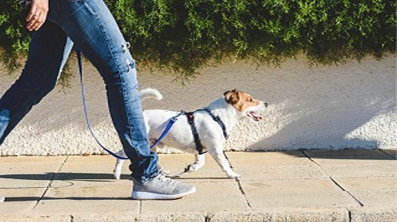

My Hobby
Game
Sports
Movie

高校のころにソフトテニス部に所属しており、今でも好きなので、部活引退後も運動の１つとして続けている。最近は寒いということやコロナウイルスの影響もあって出来ていないが、今後も続けていきたい。生涯スポーツとしても親しまれている。

時間があるときや、少し運動したいと思ったときに散歩をしている。周りの景色を見ながら散歩をすることで気分転換にもなり、とても効果的である。よく課題で疲れたときに散歩をすることが多い。
Top